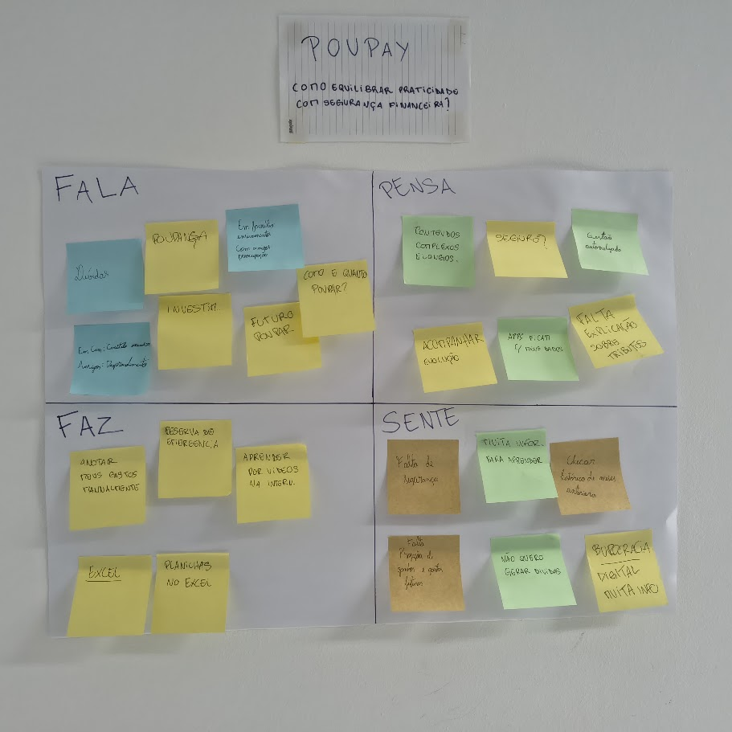

Poupay.
Consciência financeira, educação prática e investimentos para a juventude.
Uma solução digital pensada para eliminar a sobrecarga cognitiva na gestão do dinheiro, estimular o hábito de poupar e descomplicar o mundo dos investimentos sem burocracia ou termos inacessíveis.
Controle sem Fricção
Automação de extrato para combater o abandono precoce das folhas de cálculo manuais.
Privacidade Transparente
Soberania integral dos dados do utilizador, eliminando a desconfiança com apps bancárias.
Metas Tangíveis
Separação em mealheiros para reserva de emergência sem infantilização ou mecânicas punitivas.
Matriz CSD Consolidada
Cruzamento entre dados empíricos de mercado (Serasa, SPC Brasil, CVM, Banco Central) e as suposições e dúvidas de design da equipe.
55% dos jovens da Geração Z (18 a 29 anos) já são os principais responsáveis pela gestão das suas finanças.
Fonte: Pesquisa Serasa / Opinion Box (2.923 jovens). serasa.com.br/imprensa ↗Apenas 10% dos jovens desta geração relatam ter tido acesso significativo à educação financeira no ambiente familiar.
Fonte: Levantamento Serasa / Opinion Box. serasa.com.br/imprensa ↗Cerca de 47% dos jovens da Geração Z declaram não realizar qualquer tipo de controlo regular sobre entradas e saídas.
Fonte: Pesquisa CNDL / SPC Brasil (todas as capitais). site.cndl.org.br/pesquisa ↗84% dos jovens pensam constantemente nas suas finanças e 67% sentem aflição ou ansiedade quanto ao futuro financeiro.
Fonte: Consumidor Moderno / Opinion Box. consumidormoderno.com.br ↗Redes sociais e criadores de conteúdo financeiro (finfluencers) tornaram-se a principal fonte de aprendizagem.
Fonte: CVM / ANBIMA (Estudo Regulatório Finfluencers). conteudos.cvm.gov.br ↗- Jovens gostam de soluções "gamificadas" com pontuações e recompensas lúdicas.
- Acredita-se que o jovem não investe por achar que precisa de muito dinheiro para começar.
- Supõe-se que a Geração Z prioriza o orçamento em experiências imediatas (viagens, eventos, lazer) em vez de acumulação de património físico.
- Supõe-se que os jovens têm maior inclinação a adotar assistentes virtuais/IA do que utilizar folhas de cálculo tradicionais ou anotações manuais.
- Supõe-se que a ascensão de carreiras com rendimento variável (freelancers, autonomia) é um dos maiores obstáculos à poupança contínua.
- Supõe-se que os jovens evitam interações físicas/formais com instituições financeiras e migram para experiências 100% digitais e fluidas.
- Quem são os nossos concorrentes diretos, indiretos e inspiradores?
- Há interesse genuíno desse público-alvo para começar a investir?
- Qual o perfil socioeconómico predominante do nosso público universitário?
- Como manter a constância do jovem no controlo financeiro sem gerar stress?
- De que forma pagamentos instantâneos (Pix) influenciam a tomada de decisão impulsiva?
- Quais métodos e ferramentas o jovem utiliza hoje para controlar despesas?
- Qual o principal obstáculo percebido com relação a apps financeiras?
- Onde está a maior lacuna didática na aprendizagem de investimentos?
- Qual o objetivo financeiro primário antes de procurar grandes rentabilidades?
Mapa de Empatia

🗣 O que FALA
Declarações💭 O que PENSA
Modelos mentais🏃 O que FAZ
Ações reais❤️ O que SENTE
EmoçõesAnálise Competitiva (9 Soluções)
Mapeamento sistemático de soluções diretas, indiretas e produtos inspiradores de engajamento para identificar oportunidades únicas para o Poupay.
// Concorrentes Diretos Focados em Jovens
Mozper (Brasil)
App + CartãoApp + cartão de débito Visa controlado pelos pais, com mesada e tarefas remuneradas.
+ Prós: Modos pai/filho bem delineados; linguagem não infantilizada.
- Contras: Mensalidade de R$ 25/mês e sem autonomia de registo para o jovem.
Mooney
EdfintechEdfintech gamificada com mascotes ("Mooners"), mealheiros para metas e missões.
+ Prós: Forte conexão emocional com mascotes e feedback lúdico.
- Contras: Estética excessivamente infantilizada para universitários.
NextJoy (Bradesco)
Conta MenoresConta gratuita de 0 a 17 anos com personagens Disney e mesada programada.
+ Prós: Apelo visual forte e mesada programada automática.
- Contras: Responsável deve ser correntista; transferências restritas.
C6 Yellow (C6 Bank)
Investimento JovemConta digital com Pix, metas de economia e aplicação direta em CDB diário.
+ Prós: Personalização visual e investimento real em CDB desde cedo.
- Contras: Conteúdo educativo superficial com viés estritamente comercial.
Greenlight (EUA)
Líder GlobalPioneiro global na divisão de potes: Spend, Save, Give e Invest com limites rígidos.
+ Prós: Potes com propósito evidente que educam sobre alocação.
- Contras: Modelo 100% pago sem plano gratuito; excesso de funções.
União dos Três Pilares
Nenhum concorrente direto une com equilíbrio: automação de extrato sem custos + educação didática contextual + metas de reserva sem infantilização.
// Concorrentes Indiretos
Mobills / Organizze (Apps Tradicionais)
Interfaces completas com gráficos, porém com tom frio, barreiras de subscrição e ausência de educação para iniciantes.
💡 Diretriz: Gráficos de leitura imediata sem bloquear recursos essenciais.Redes Sociais & Folhas de Cálculo Manuais (Instagram / TikTok)
Conteúdo visual dinâmico em vídeos rápidos, porém as folhas de cálculo manuais geram abandono imediato por fadiga de digitação.
💡 Diretriz: Pílulas de conteúdo curtas integradas ao fluxo da aplicação.// Inspiradores de Engajamento
Duolingo (Hábitos e Retenção)
Referência em rotina diária voluntária, mas mecânicas punitivas (perder vidas/ofensivas) causam ansiedade quando aplicadas ao dinheiro.
💡 Diretriz: Reforço positivo diário sem punições emocionais sobre o saldo.Strava (Reconhecimento de Conquistas)
Excelente sensação de evolução em metas pessoais, mas expor números absolutos de dinheiro geraria constrangimento.
💡 Diretriz: Conquistas visuais e celebração de metas preservando quantias reais.Questionário com Utilizadores
Adoção Zero Prévia
Nunca usaram apps dedicadas de finanças por desconfiança na segurança.
Verificação Frequente
Verificam o saldo frequentemente no banco, mas atuam de modo meramente reativo.
Gasto Fora da Meta
Admitiram gastar além do planeado com pequenas compras diárias no Pix.
Necessidade de Aprender
Avaliaram como alta a urgência de receber educação prática sobre finanças.
// Hierarquia de Recursos Solicitados
| Funcionalidade | Aprovação | Média (0-4) | Relevância de Requisito |
|---|---|---|---|
| Gráficos de Gastos | 97,1% | 3,60 | Prioridade Máxima (Visão imediata) |
| Alertas de Limite | 91,4% | 3,37 | Avisos proativos antes do estouro |
| Registo Automático | 88,6% | 3,40 | Elimina a digitação manual |
| Metas de Economia | 88,6% | 3,20 | Mealheiros visuais de reserva |
| Dicas Educativas | 80,0% | 3,03 | Pílulas contextuais sobre taxas |
| Gamificação Lúdica | 37,1% | 2,06 | Rejeitada (62,9% indiferentes) |
Desmistificando a Gamificação
A suposição inicial de que os jovens procuravam jogos e mascotes virtuais foi refutada numericamente. O público universitário procura dashboards claros, visualização imediata e praticidade; o valor percebido reside em barras de progresso reais e clareza sobre o saldo.
Objetivos Mapeados
Relatório do Grupo Focal
Análise qualitativa e transcrição consolidada da sessão conduzida com utilizadores reais, aprofundando comportamentos, modelos mentais e requisitos de IHC.
// Porquê o Grupo Focal?
Justificativa Metodológica de IHC
O grupo focal é especialmente indicado para identificar a multiplicidade de opiniões, modelos mentais conflitantes e a dinâmica de debate espontâneo entre pares[cite: 28]. Em temas financeiros, cercados por tabus, a conversa coletiva permitiu que os entrevistados expusessem com naturalidade os seus hábitos informais, gastos por impulso e frustrações reais com ferramentas anteriores.
A técnica cumpriu o papel de triangulação qualitativa, permitindo compreender o "porquê" dos números obtidos no questionário quantitativo.
// Critérios de Recrutamento
Porquê a Escolha Destes Participantes?
Adotámos a estratégia de amostragem intencional por variação máxima de maturidade financeira dentro da faixa universitária (18 a 24 anos)[cite: 6]. Em vez de perfis idênticos, selecionámos propositadamente dois extremos de modelo mental financeiro:
- O Jovem Pragmático / Controlo Mental (P1): Perfil representativo da maioria do questionário (85,7% sem app dedicada), que opera com foco em liquidez imediata, controlo mental e sofre forte atrito com leitura de textos técnicos.
- O Jovem Investidor / Analítico (P2): Utilizador com inserção profissional na área financeira/mercado, que já poupa percentagens fixas (30% a 50%), usa a app da XP e caderno, exigindo comparadores visuais e alta segurança de custódia.
// Perfil Real dos Participantes Entrevistados
Participante 1 (P1)
Perfil Pragmático • Controlo Mental & ExtratoComportamento Financeiro: Não verifica entradas e saídas no dia a dia; calcula o saldo mentalmente após gastar. Define como teto gastar no máximo metade do que tem na conta para manter reserva de emergência.
Gargalos e Dores: Gastos acumulados com entregas de comida, alimentação fora de casa (fast food) e transporte por aplicação (Uber). Sente que o pagamento por aproximação não dá a dimensão do dinheiro a sair da conta.
Adoção Tecnológica: Tolerância nula para lançar comprovativos manualmente; aprende melhor através de vídeos curtos de 2 minutos (estilo Reels); rejeita textos longos e termos técnicos difíceis.
Participante 2 (P2)
Perfil Analítico • Trabalhador da Área & InvestidorComportamento Financeiro: Separa de 30% a 50% do rendimento logo no início do mês para investimentos (trata como despesa fixa adiantada). Faz contas diárias pela app do banco (XP) e anotações estruturadas em caderno.
Gargalos e Dores: Já utilizou folhas de cálculo para cobrança partilhada no cartão, mas desistiu por falta de tempo para ajustar fórmulas. Sofre com microgastos acumulados em Uber e compras a prestações excessivas.
Adoção Tecnológica: Domina renda fixa e títulos públicos; tem curiosidade em ações; aceitaria carregar o extrato semanalmente; prefere gráficos de barras comparativas (estilo League of Legends).
// Procedimentos Éticos e TCLE
A atividade de campo obedeceu rigorosamente aos preceitos éticos em investigação de IHC (Barbosa e Silva, 2010)[cite: 51]:
- Termo de Consentimento Livre e Esclarecido (TCLE): Ambos os entrevistados assinaram digitalmente o TCLE antes da gravação de áudio.
- Anonimato e Não-rastreabilidade: As identidades reais foram codificadas em Participante 1 e Participante 2, preservando o sigilo dos dados nominais.
- Direito de Recusa e Desistência: Foi garantida liberdade plena para interromper a participação ou abster-se de responder a qualquer questão sem prejuízo.
- Proteção de Dados Sensíveis: Não foram recolhidos saldos reais de contas, palavras-passe de acesso bancário ou números de cartões.
// Método: Análise Temática de Conteúdo
O processamento dos dados recolhidos seguiu as etapas clássicas da Análise Temática de Conteúdo (Bardin; Braun & Clarke):
- Transcrição e Familiarização: Transcrição e limpeza dos turnos de fala da gravação de áudio de 52 minutos.
- Codificação Aberta: Geração de códigos primários como "dor do microgasto em Uber/comida", "ilusão de poder na aproximação", "fadiga de fórmulas em folhas de cálculo" e "aversão a gamificação lúdica".
- Mapeamento dos Temas Centrais: Consolidação dos 6 temas que definem diretamente os requisitos de IHC da solução.
// Síntese dos Eixos Temáticos Investigados
A Ilusão da Aproximação
O pagamento por aproximação no cartão ou telemóvel remove a fricção da compra e cria a sensação de "sentir-se poderoso". Como não se visualiza o saldo a descer no ato, o dinheiro sai sem controlo percetivo.
A Armadilha dos Microgastos
Compras de valor elevado (R$ 100 a R$ 300) são facilmente lembradas. O verdadeiro descalabro de final de mês provém de viagens curtas de Uber, refeições rápidas, compras a prestações acumuladas e fast food.
Morte da Digitação Manual
Folhas de cálculo manuais foram abandonadas pela sobrecarga de atualizar e ajustar fórmulas após um dia cansativo. O jovem tolera carregar o extrato uma vez por semana ou prefere sincronização direta.
Gráficos de Barras > Circular
Rejeição aos gráficos circulares (pizza) convencionais. Os utilizadores preferem listas com faixas de cores (cinzento para seguro, vermelho para alerta) e barras comparativas (estilo estatísticas do *League of Legends*).
Didática em Vídeos de 2 Minutos
Textos longos provocam preguiça e fazem o utilizador desistir de investir. A aprendizagem ideal ocorre no formato de vídeos rápidos (*Reels/TikTok*) com criadores que traduzem jargões de forma simples.
Rejeição à Gamificação Lúdica
Classificada como "infantil" ou "irrelevante". O jovem universitário não quer pontuações fictícias ou mascotes virtuais em finanças; recompensas válidas são milhas, cashback real ou desbloqueio de cursos avançados.
// Falas Literais em Destaque na Transcrição
"Você só vai gastando e não vê o saldo a diminuir, esse é o problema. A gente vai comer fora com namorada, não vai vendo o valor, e quando vê no final do mês já não tem nada."
"Desisti da folha de cálculo mais pelo tempo. Ficar a montar e a ajustar fórmulas manualmente cansa. Se aproximou o cartão e já caísse automático numa tabelinha, era só bater o olho."
"Cuidar do dinheiro já é sério. Ninguém quer perder tempo a brincar com um bichinho virtual ou foguinho; se quiser jogar, a pessoa abre o Discord ou o videojogo."
// Cruzamento: Resultados Quantitativos vs. Evidências Empíricas do Grupo Focal
| Dimensão Investigada | Dado do Questionário Quantitativo | Evidência Empírica do Grupo Focal Real |
|---|---|---|
| Consulta de Saldo | 74,3% verificam com frequência | Ambos abrem a app do banco diariamente, mas confirmaram que a consulta é passiva (apenas para ver se têm margem para o almoço do dia), sem planeamento ativo. |
| Desvios no Orçamento | 47,1% gastam além do planeado | Os entrevistados apontaram como culpados a acumulação de viagens curtas de Uber (R$ 10-20), refeições rápidas e a facilidade do cartão por aproximação, que disfarça a perda financeira. |
| Registo Automático | 88,6% consideram importante | P1 tem tolerância nula para digitação manual após o dia de estudo/estágio, e P2 abandonou folhas de cálculo por falta de tempo para ajustar fórmulas. Exigem automação no extrato. |
| Gráficos de Gastos | 97,1% consideram importante | Rejeição ao gráfico circular tradicional. Preferem listas com alertas em faixas de cor (cinzento para seguro, vermelho para alerta) e barras comparativas (estilo *LoL*). |
| Educação Financeira | Média 4,46/5 na necessidade de aprender | P1 afirmou que a escola não ensina finanças e que textos longos provocam desinteresse. Pede vídeos curtos de 2 minutos inspirados em criadores descontraídos de redes sociais. |
| Gamificação / Recompensas | 62,9% rejeitaram ou foram indiferentes | Ambos afirmaram que "moedinhas", mascotes ou "foguinhos" não funcionam para finanças. Havendo benefício, este deve ser real (cashback, milhas ou cursos avançados). |
// Requisitos de IHC e Diretrizes de Design da Solução
Eliminar qualquer necessidade de preenchimento manual de despesas ou faturas.
Adotar barras de gastos comparativas (cinzento no limite seguro, vermelho em alerta de estouro).
Exibir notificações preventivas de saldo e alertas antes de atingir o limite orçamental da semana.
Ocultar o dinheiro poupado do ecrã inicial para evitar a tentação de gastar a reserva no dia a dia.
Substituir manuais densos por microconteúdos dinâmicos a explicar impostos e investimentos básicos.
Apresentar de forma evidente as garantias de segurança auditadas pelo Banco Central.
Personas
Lucas
Persona Primária • 20 anosPerfil Demográfico e Ocupação: Solteiro, residente em Niterói – RJ. Estagiário presencial de TI e estudante de licenciatura no 5º semestre. Rendimento mensal de R$ 1.400,00 (bolsa de estágio). Mora com os pais e não assume despesas fixas de habitação.
Habilidades Técnicas: Fluente no uso diário de smartphones, redes sociais e apps de entrega/transporte, mas possui conhecimento leigo sobre economia, investimentos e tributação.
Objetivos: Terminar o mês sem entrar no limite da conta; criar uma reserva financeira para imprevistos e lazer; aprender a investir sem necessidade de ler textos extensos.
Tarefas Típicas: Consulta o saldo bancário rapidamente antes de gastar; paga por aproximação ou Pix; calcula mentalmente a margem restante até à próxima bolsa.
Dores e Frustrações: Perda de controlo por microgastos invisíveis (fast food, cafés e Uber); sensação de que o pagamento por aproximação mascara a saída de dinheiro; aversão a folhas de cálculo manuais.
Requisitos de Interação: Automação integral de lançamentos; alertas visuais com barras de limite por cor; pílulas educativas em vídeos curtos de 2 minutos.
Beatriz
Persona Secundária • 23 anosPerfil Demográfico e Ocupação: Solteira, residente em São Gonçalo – RJ. Analista Júnior com contrato formal (jornada de 8h) e estudante universitária no período pós-laboral. Rendimento mensal de R$ 2.500,00 líquidos. Contribui para as despesas domésticas.
Habilidades Técnicas: Boa capacidade analítica; faz anotações em caderno; consome conteúdo financeiro no Instagram, embora mantenha dúvidas sobre alíquotas fiscais (IR, IOF) e renda variável.
Objetivos: Separar rigorosamente 30% a 40% do salário no início do mês para investimento; visualizar despesas por categorias consolidadas; evitar a perda de tempo em folhas de cálculo ao fim de semana.
Tarefas Típicas: Paga despesas fixas e transfere poupanças no dia do ordenado; divide contas de lazer com amigos no cartão; analisa gastos mensais de cabeça ou no caderno.
Dores e Frustrações: Perda de tempo ao ajustar fórmulas em folhas de cálculo; dificuldade em gerir compras a prestações partilhadas; receio de imobilizar capital em aplicações com carência prolongada.
Requisitos de Interação: Gráficos de barras comparativas; transparência clara sobre segurança de dados e Open Finance; isolamento dos fundos investidos face à conta corrente.
Matheus
Persona Secundária • 21 anosPerfil Demográfico e Ocupação: Solteiro, residente em Niterói – RJ. Estudante universitário em regime integral e designer freelancer. Rendimento variável entre R$ 600,00 e R$ 1.900,00 mensais, conforme o volume de trabalho.
Habilidades Técnicas: Utilizador experiente de softwares gráficos e redes sociais; uso contínuo de dispositivos móveis, contudo sem formação em gestão de fluxo de caixa.
Objetivos: Construir um fundo de maneio para períodos de menor procura; evitar gastos por impulso quando o saldo está temporariamente elevado; organizar despesas sem burocracia.
Tarefas Típicas: Recebe pagamentos via Pix de forma dispersa; aponta valores soltos em blocos de notas; consome sem planeamento prévio nos dias de maior liquidez.
Dores e Frustrações: Insegurança orçamental gerada pela volatilidade dos ganhos; impulsividade motivada por estímulos de compras online; descontinuidade de controlos por ausência de rotina fixa.
Requisitos de Interação: Mealheiros com propósitos definidos para salvaguarda de reserva; notificações inteligentes antes de fins de semana; linguagem acessível e madura.
Cenários de Problema
A Ilusão da Aproximação e o Descontrolo Invisível
Ator Principal: Lucas Rocha (Estagiário)
Numa quinta-feira, Lucas sai do estágio cansado antes de seguir para a faculdade. Entra num café com o intuito de fazer um lanche rápido e económico. Ao verificar a conta de R$ 18,50, aproxima o telemóvel do terminal de pagamento. A transação é concluída em 3 segundos, sem solicitação de código e sem indicação do saldo remanescente. No intervalo das aulas, repete o procedimento na cantina (R$ 9,00) e mais tarde recorre a um Uber de R$ 14,00 devido ao atraso do autocarro. No domingo, ao aceder à app bancária para verificar a disponibilidade de fundos para sair, descobre que o saldo se esgotou. Ao consultar o extrato, depara-se com inúmeros pequenos débitos acumulados que passaram despercebidos.
- A aproximação reduz a perceção psicológica do gasto e oculta o saldo final.
- Inexistência de avisos preventivos antes de atingir valores acumulados elevados.
- O extrato bancário linear contínuo prejudica a análise consolidada por categorias.
A Sobrecarga de Preenchimento e o Abandono
Atora Principal: Beatriz (Analista)
Após uma semana intensa de trabalho e aulas, Beatriz tenta organizar as suas contas numa sexta-feira à noite. O seu objetivo consiste em validar se poupou a quantia definida de R$ 800,00 e preparar a liquidação do cartão. Abre o computador e a folha de cálculo iniciada semanas antes. Para a atualizar, precisa de consultar no telemóvel os movimentos dos últimos 7 dias, rever recibos e introduzir linha a linha os valores no Excel. Durante o processo, uma fórmula na categoria de lazer gera um erro de cálculo. Exausta, passa 15 minutos a tentar solucionar o problema técnico, desiste face à complexidade de compras partilhadas e fecha o programa sem guardar as alterações.
- A transcrição manual sistemática acarreta fadiga mental e forte atrito cognitivo.
- Incidentes técnicos em fórmulas desviam a atenção da atividade primordial de planeamento.
- Ausência de suporte para conciliação expedita de débitos partilhados e compras faseadas.
Insegurança Conceitual e Capital Desprotegido
Ator Principal: Lucas (Estagiário)
Com o recebimento da bolsa de estágio (R$ 1.400,00), Lucas decide alocar R$ 300,00 para constituir a sua reserva de emergência. No menu de investimentos da aplicação bancária, identifica instrumentos como CDB e Tesouro Selic. Contudo, ao selecionar um produto, depara-se com terminologias tais como "Carência de 90 dias", "Tabela Regressiva de IR", "Come-cotas" e "IOF nos primeiros 30 dias". Temendo perder liquidez imediata ou ver o montante diminuído por impostos em caso de emergência, procura esclarecimento. A aplicação sugere um documento denso de três páginas com terminologia hermética, o que desmotiva a leitura. Inseguro, abandona a operação e mantém o dinheiro na conta à ordem, sendo este absorvido nas semanas seguintes por despesas correntes.
- Vocabulário financeiro hermético sem apoio explicativo contextual no fluxo da tarefa.
- Textos técnicos extensos incompatíveis com a preferência por microformatos didáticos.
- Inexistência de segregação visual dos valores poupados, permitindo o seu gasto acidental.
Análise de Tarefas (HTA)
Controlar Gastos Quotidianos
Objetivo 0: Conter despesas semanais para evitar défice
1. Definir teto para o período
1.1 Consultar saldo total e entradas previstas
1.2 Deduzir compromissos fixos obrigatórios
1.3 Estipular cota máxima variável
2. Efetuar pagamentos diários
2.1 Pagar por aproximação ou Pix
2.2 Memorizar ou arquivar comprovativo
3. Monitorizar evolução orçamental
3.1 Consultar extrato bancário
3.2 Identificar despesas de Uber e restauração
3.3 Calcular margem disponível mentalmente
4. Restringir despesas se a margem for diminuta
Plano 0: Executar 1 no início do ciclo. Realizar 2 reiteradamente. Realizar 3 a cada 2 ou 3 dias. Caso 3.3 acuse margem crítica, executar 4.
Plano 3: Executar 3.1 e 3.2. Em caso de divergência de saldo, executar 3.3.
Registar Despesas Periódicas
Objetivo 0: Consolidar balanço em caderno ou folha de cálculo
1. Reunir dados financeiros dispersos
1.1 Aceder a extratos em diferentes aplicações
1.2 Agrupar recibos e extratos de cartões
2. Transcrever dados para o suporte de registo
2.1 Abrir caderno ou folha de cálculo eletrónica
2.2 Inserir data, descrição e montante
2.3 Atribuir categoria ao lançamento
3. Processar e analisar totais
3.1 Calcular o somatório por categoria
3.2 Comparar com o período antecedente
3.3 Apurar divergências e guardar ficheiro
Plano 0: Executar 1 e 2 no termo da semana ou mês. Posteriormente executar 3. Se ocorrer falha técnica em 2, interromper a tarefa.
Plano 2: Se em suporte de papel, executar 2.1 e 2.2 em caderno. Se em computador, executar 2.1, 2.2 e 2.3 em folha de cálculo.
Poupar e Efetuar Aplicação
Objetivo 0: Alocar capital em produto financeiro conservador
1. Segregar o montante a poupar
1.1 Definir quantia fixa ou percentagem
1.2 Transferir para fora da conta à ordem
2. Escolher o instrumento financeiro
2.1 Aceder ao módulo de investimentos
2.2 Filtrar títulos de Renda Fixa/CDB
2.3 Analisar prazos, carência e impostos
3. Validar a subscrição financeira
3.1 Especificar o montante a investir
3.2 Confirmar termos e maturidade
3.3 Autenticar através de biometria/código
Plano 0: Executar 1 no dia de recebimento. Executar 2. Estando as regras em 2.3 assimiladas e seguras, executar 3; caso contrário, cancelar 3.
Plano 2: Executar 2.1 e 2.2. Existindo dúvidas fiscais (IOF/IR) em 2.3, realizar pesquisa externa antes de prosseguir.
// Análise Comparativa de Cenário: Utilizador Inexperiente vs. Experiente
Avaliação comparativa da realização da tarefa de subscrição de investimento (Cenário 3 / Tarefa 3) tendo em conta as diferenças de modelo mental entre um perfil novato (Lucas) e um experiente (Beatriz):
| Dimensão de Análise | Utilizador Inexperiente (Lucas - Novato) | Utilizadora Experiente (Beatriz - Fluente) |
|---|---|---|
| Planeamento Mental | Hesitante e inseguro; receia imobilizar o dinheiro e sofrer penalizações por taxas desconhecidas. | Automatizado; concebe a alocação como um compromisso mensal prévio de rotina. |
| Navegação e Pesquisa | Exploração por tentativa e erro; despende tempo a inspecionar alternativas inadequadas ao seu perfil. | Filtra imediatamente instrumentos de dívida pública e CDB com liquidez diária. |
| Interpretação de Regras | Bloqueio perante siglas como "IOF regressivo", "D+1" e "Come-cotas"; necessita de esclarecimento conciso. | Compreende as taxas e indexadores de imediato; projeta o ganho líquido de forma autónoma. |
| Conclusão da Tarefa | Elevada taxa de abandono: o excesso de termos técnicos desprovidos de apoio instrucional provoca desistência. | Conclusão bem-sucedida: valida a transação e regista o comprovativo rapidamente. |
| Esforço de Interação (KLM) | Tempo dilatado de preparação mental (M) e paragens sistemáticas para leitura e avaliação (W). | Tempo residual de preparação mental (M); interação fluida de toques e autenticação célere. |
Uso de Inteligência Artificial no Projeto
Transparência metodológica sobre a utilização de Modelos de Linguagem (LLMs) como ferramentas de apoio na análise de dados e na redação técnica de IHC.
Análise de Dados Quantitativos
A IA foi empregue no processamento das respostas em bruto do Google Forms, cálculo de distribuições estatísticas, médias em escalas Likert e correlações entre variáveis comportamentais.
Análise de Dados Qualitativos
A ferramenta apoiou a codificação indutiva e a organização da transcrição da sessão de grupo focal, auxiliando na categorização temático-estrutural dos testemunhos.
Refinamento Textual e Visual
Apoio na revisão redatorial dos artefactos do portfólio, garantindo uniformidade terminológica de IHC, concisão textual e correção gramatical.
Equipa do Projeto
Desenvolvido no âmbito da unidade curricular de Interface Homem/Máquina.